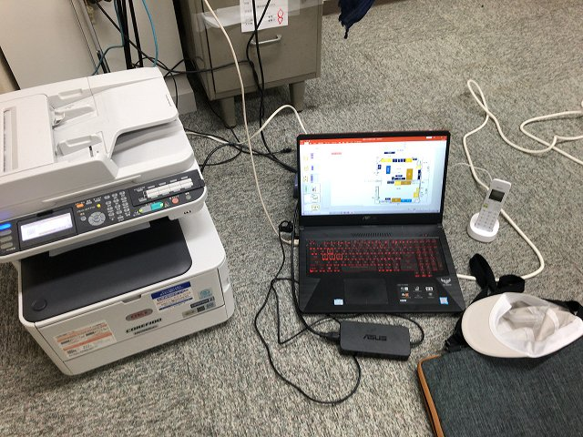

明日からいよいよ研究室引っ越しです。PCやプリンタなど壊れやすいモノは自分たちで事前に移動させます。准教授の人は15日午前中にオンライン会議があるため最低限の環境構築が必要。
6年前の自作A型看板
デスクトップはハンドキャリアで
これは廃棄
懐かしい学会キーホルダ
7年前か

エレベータないので一苦労です
准教授の人の最低限の仕事環境
湿度が高い
お茶は飲みたい
机は会議までに届く予定
| ・ 事前移動 (R03.07.13) | |||
明日からいよいよ研究室引っ越しです。PCやプリンタなど壊れやすいモノは自分たちで事前に移動させます。准教授の人は15日午前中にオンライン会議があるため最低限の環境構築が必要。 |
|||
|
6年前の自作A型看板 |
デスクトップはハンドキャリアで | ||
|
これは廃棄 |
懐かしい学会キーホルダ | ||
|
7年前か |
エレベータないので一苦労です | ||
|

准教授の人の最低限の仕事環境 |
湿度が高い | ||
|
お茶は飲みたい |
机は会議までに届く予定 | ||